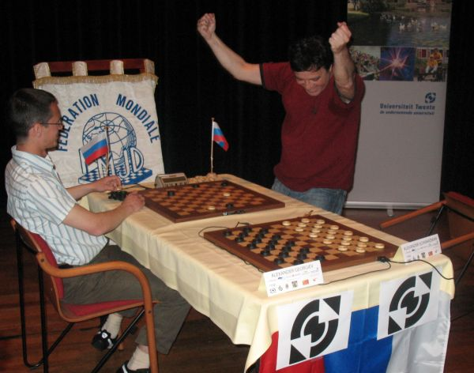

There are no translations available.
Afgelopen weekend waren we getuige van de zinderend spannende ontknoping van één van de meest spectaculaire WK Matches ooit. Een match die in veel opzichten baanbrekend, vernieuwend en innovatief is.
Fantastisch dat die finale nu net gespeeld werd bij de Universiteit Twente die zich al jaren presenteert als “Ondernemende Universiteit”. Ondernemen betekent altijd creatief zoeken naar manieren om met weinig middelen veel te bereiken. Weinig middelen, dat is beslist van toepassing op deze match. Weinig financiële middelen, bijvoorbeeld. Gelukkig kon deze match doorgaan dankzij de financiële bijdragen van onder andere de gemeenten Enschede, Hengelo, Twenterand en van de Universiteit Twente.
")
")
")